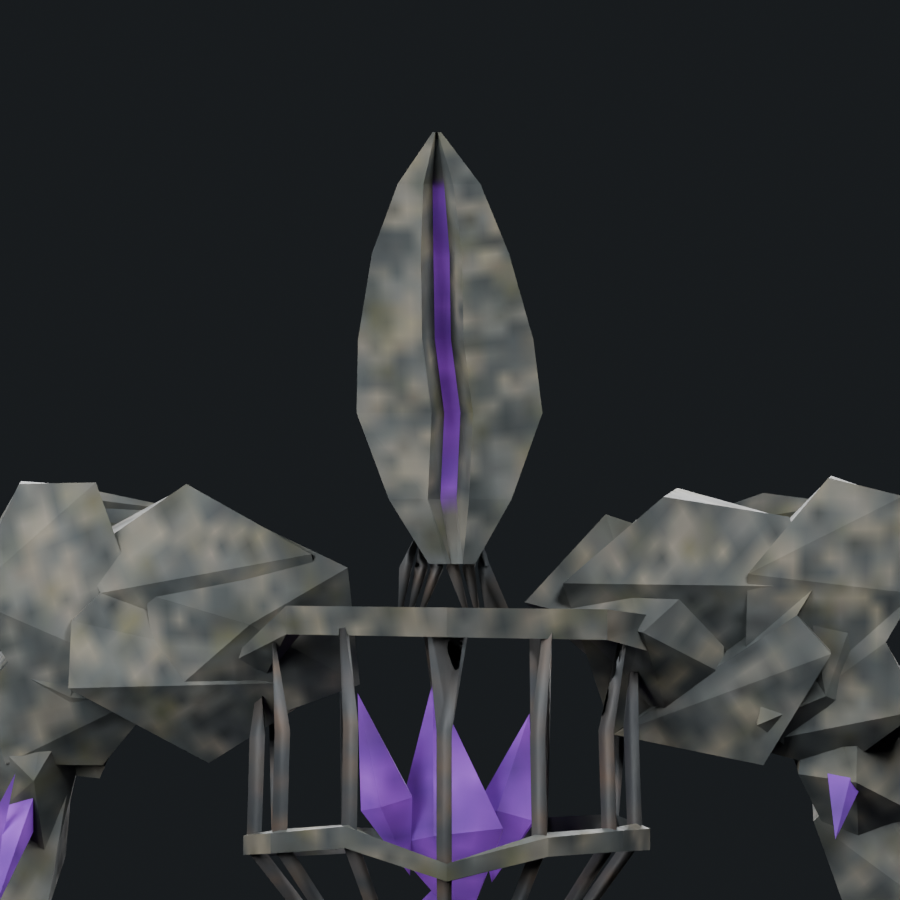
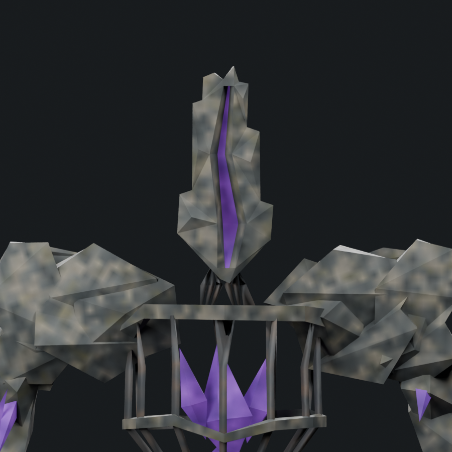
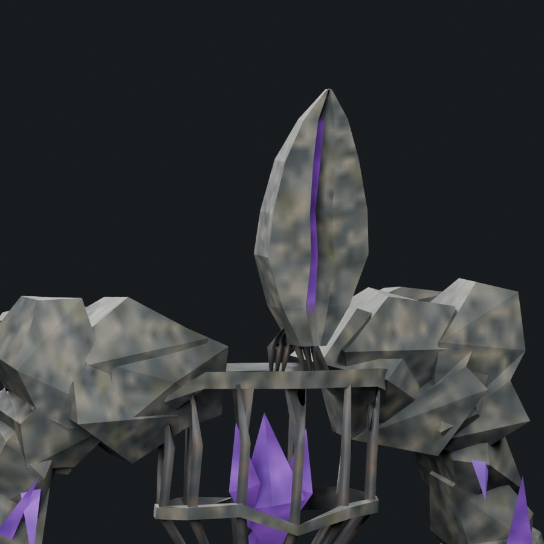
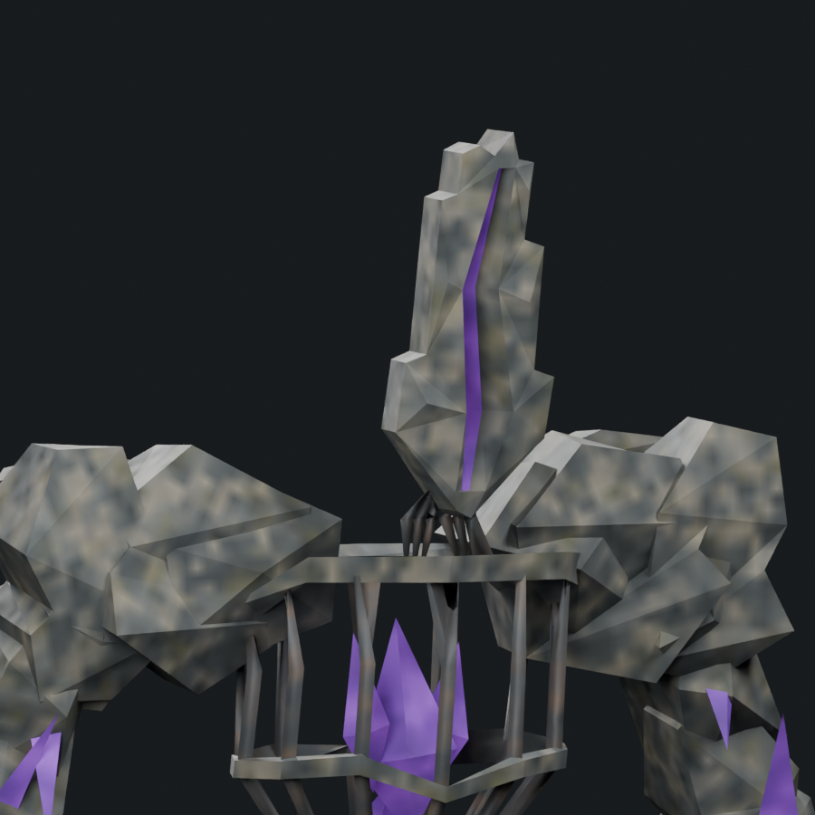
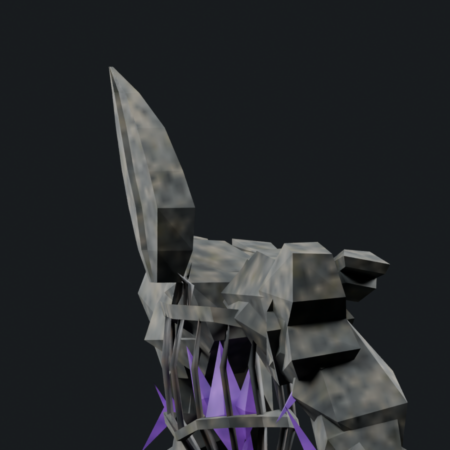
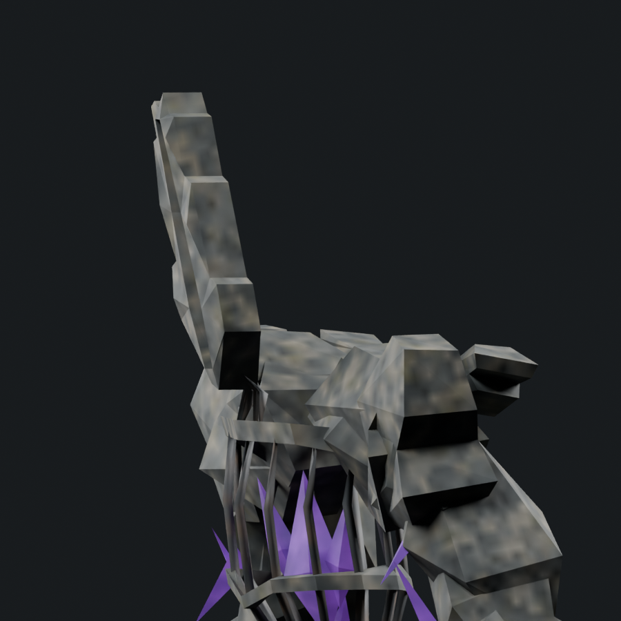
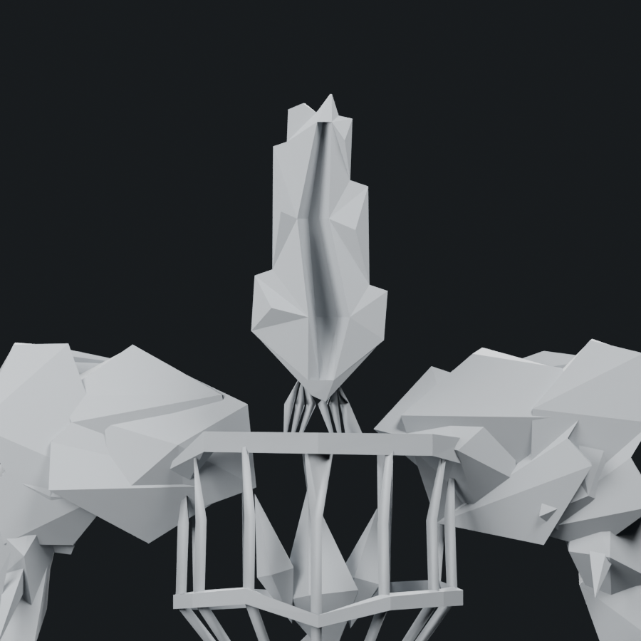
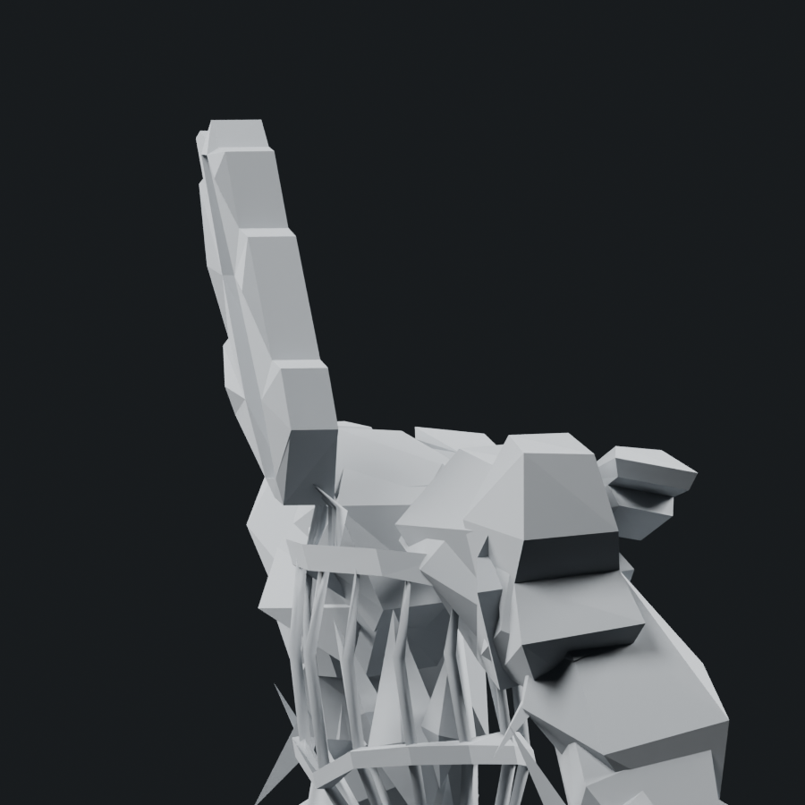
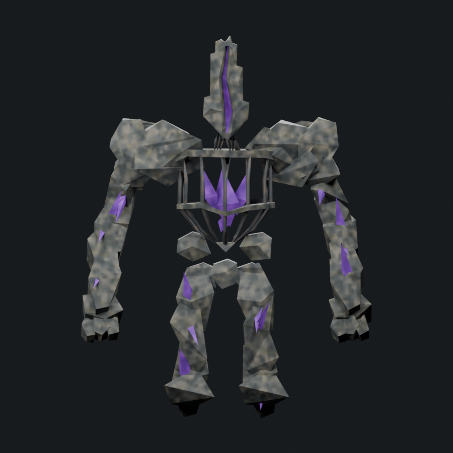
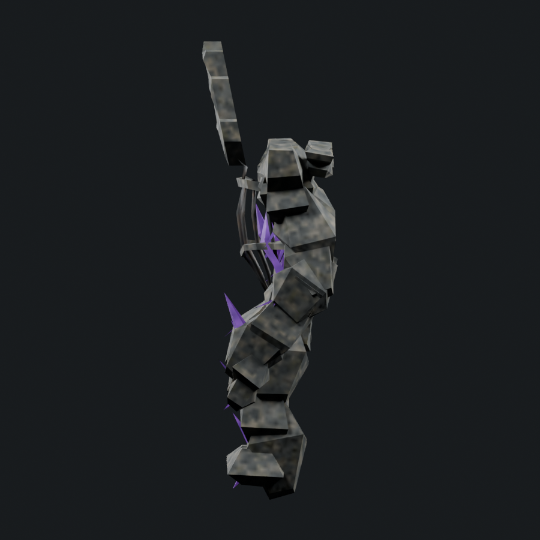

Unaccepted. All 44 audit findings remain open. H01–H04 received a first structural repair. 1,800 triangles / 1,800 soft cap. Body geometry preserved.
Repair notes and limits · Rolling findings · Original audit · Portable skinned model
Reference perspective differs from the orthographic model. Before/after renders use exactly the same cameras and lighting. Side views face left.










| Finding | Repair | Still unresolved |
|---|---|---|
| H01 | The tapered shell was discarded after the user rejected its still-oval shape. An explicit twenty-corner extruded slab perimeter now has long straight sides, abrupt ledges, an uneven summit and triangular lower wings. | The slab is still a coarse interpretation; finer local breaks and reference-led facet proportions remain unresolved. |
| H02 | Four integrated cortex fracture points interrupt the broad slab faces; front/back share the polygon perimeter and the fault remains recessed into one connected shell. | The source has a much denser hierarchy of chips, staggered layers and secondary fracture planes. This is only a first structural repair. |
| H03 | The connected fault changes direction, width and depth; asymmetric bevels expose a recessed violet floor backed by a solid shell. | The opening still reads too cleanly in places, and the violet surface lacks the reference crystalline facet hierarchy. |
| H04 | The lower reveal widens between broken, unequal cortex edges before closing into the connected base. | The lower tip remains too simple; fractured ledges and the violet-to-stone transition need further fitting. |
The surface still needs substantial work. Missing crest, cage/core, hands, legs and feet were not repaired here. Native runtime acceptance is pending. Adequate bosses: 1/6.